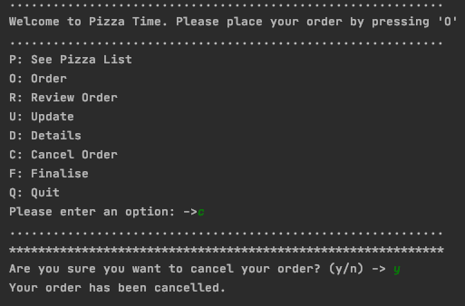

Aim:
To bulid a function which enables the customer to cancel their entire order, if the customer confirms their choice.
Planning

Sprint Board
Iterative Decision
Option 1:
This option has all the code for the cancel feature in a function. Since the code was in a seperate function, to clear the order list i had to use 'olist.clear()' to clear it from the function. If i used 'olist=[]' then the customer order list wouldn't properly clear as it is a list which only esists in the function and is separate from the order list. Essential I would be creating a new list inside this function and declaring it as empty, it's not actually accessing the order list in the main function.
Option 2:
This option has all the code for the cancel feature in the main menu. As I was already in the function with the order list, to clear it I can just user 'order=[]'.
Evaluation:
I decided on Option 1 as it addresses the relevant implication of future-proofing better. This is because if the code is in a seperate function, it is easier to understand where to go in the code if a crash occurs. This is especially important when the scale of the project increases significiantly because the main function will be getting really long. So even though option 1 is a little more complicated, it is the better option.
Testing Plan:
This thorough test makes it clear to me that this function is working exactly as planned. In the test I inputed expected and unexpected inputs to make sure the program wouldn't crash.
Problems I encountered:
If the customer confirmed the cancellation of their order, there was no indication on the screen that a new order had begun. This is because the customer is returned to the main menu (with a clear order list), however, the program looks exactly the same as if they denied the cancellation of their order. And to properly check this, the customer would have to go to the review function to check. This is a big probelm because the visibility of system status of the relevant implication of usability is not being meet. To fix this probelm I created a new variable called 'new_order' which if True it would start with a "welcome to Pizzatime message'. To make sure it gets called after the user cancels their order, I made sure to return True if the customer confirms Y and return False if the customer confirms N.
Before:
After:
Another problem I had was that it still allowed the customer the option to cancel their order even when there was no order to cancel. To fix this I added a condition statement to only allow the cancel function to run if the order list was more than 0. If the order list is empty and they they try and cancel the order then they will be notifies of these and they will be sent back to the main menu.
Before:
After:
Reflection:
This was just a quick function as it was pretty straight forward to plan, bulid and test. Sprint 7 works, so the customer can now cancel their order if they chose option C in the main menu. To finally cancel it, they need to confirm their deision. It was through the testing of this porgram that I realised that i needed to have a barrier between anyone trying to cancel the order, so you can only cancel your order if you have something in your order.
I have decided that I need to complete the next task in my backlog which is to make sure the user enter's their details. This is the next important feature needed for a pizza ordering program.
Clearing the list was a big difficulty as you have to use different python commands depending on where in the code you are. I learnt that using 'order=[]' will only clear a list if the list is in the same function. While, 'order.clear()' is the command that is needed to access a list from another function and clear it properly. This has taught me that there is a limit of what you can do with a parameter. For instance, if you assign a parameter to a new value (e.g. empty list) this cuts the line between the two functions and now the parameter is not connected to the original/intended list. Learning about the difficulties of changing/deleting values has made me more aware about how the program works in general.